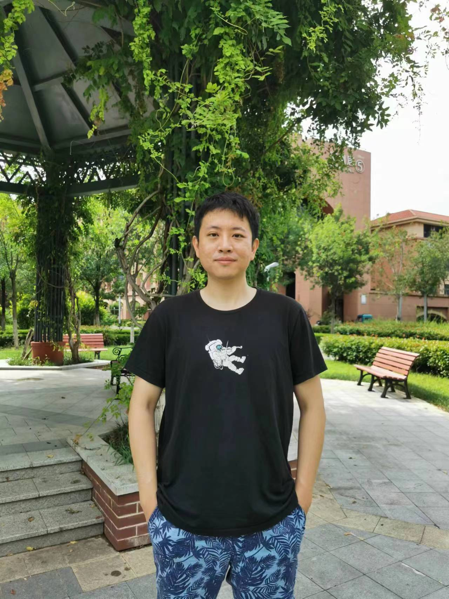

Kuan Cheng 程 宽
I am an Assistant Professor at Peking University, Center on Frontiers of Computing Studies (CFCS).
My research mainly focus on Computational Models and Complexity, especially Randomness in Computation and Coding Theory.
I'm also interested in Machine Learning, Quantum Computing and other topics in Computer Science.
Email: ckkcdh at hotmail.com/gmail.com/pku.edu.cn
Office: 206-3, Courtyard No. 5, Jingyuan. (In office every Tuesday 2pm-5pm)
I'm looking for talent students and postdocs interested in TCS and related areas! Please feel free to contact me.
Contents:
Work & Education\
Teaching\
Publication
Previous Work & Education Experience
Before I came to Peking University, I was a postdoc at The University of Texas at Austin, hosted by David Zuckerman.
I achieved a PhD degree from Johns Hopkins University, Computer Science Department, advised by Xin Li.
Before that I obtained a master degree from Tsinghua University and a bachelor degree from Shandong University.
Teaching
Introduction to Theory of Computation, 2021 Spring, 2022 Spring, 2023 Spring, 2024 Spring.
Theory of Computation: Advanced Methods and Frontier Topics, 2022 Fall, 2023 Fall.
Publication
- Kuan Cheng, Minghui Ouyang, Chong Shangguan, Yuanting Shen;
When can an expander code correct Ω(n) errors in O(n) time?;
In International Conference on Randomization and Computation (RANDOM) 2024.
- Kuan Cheng, Ruiyang Wu;
Randomness Extractors in AC0 and NC1: Optimal up to Constant Factors;
In International Conference on Randomization and Computation (RANDOM) 2024.
- Kuan Cheng, Yichuan Wang;
BPL ⊆ L-AC1;
In Computation Complexity Conference (CCC) 2024.
- Kuan Cheng, Elena Grigorescu, Xin Li, Madhu Sudan, Minshen Zhu;
On k-Mer-Based and Maximum Likelihood Estimation Algorithms for Trace Reconstruction;
In IEEE International Symposium on Information Theory (ISIT) 2024.
- Yuan Zhang, Tao Huang, Jiaming Liu, Tao Jiang, Kuan Cheng, Shanghang Zhang;
FreeKD: Knowledge Distillation via Semantic Frequency Prompt;
In Conference on Computer Vision and Pattern Recognition (CVPR) 2024.
- Xue Chen, Kuan Cheng, Xin Li, Songtao Mao;
Random Shortening of Linear Codes and Applications;
In International Computing and Combinatorics Conference (COCOON) 2023.
- Alex Block, Jeremiah Blocki, Kuan Cheng, Elena Grigorescu, Xin Li, Yu Zheng, Minshen Zhu;
On Relaxed Locally Decodable Codes for Hamming and Insertion-Deletion Errors;
In Computation Complexity Conference (CCC) 2023.
- Kuan Cheng, Zhengzhong Jin, Xin Li, Zhide Wei, Yu Zheng;
Linear Insertion Deletion Codes in the High-Noise and High-Rate Regimes;
In International Colloquium on Automata, Languages and Programming (ICALP) 2023.
- Kuan Cheng, Shaofeng H.-C. Jiang, Luojian Wei, Zhide Wei;
On The Relative Error of Random Fourier Features for Preserving Kernel Distance;
In International Conference on Learning Representations (ICLR) 2023.
-
Kuan Cheng, Venkatesan Guruswami, Bernhard Haeupler, Xin Li;
Efficient Linear and Affine Codes for Correcting Insertions/Deletions;
In SIAM Journal on Discrete Mathematics (SIDMA) 2023.
- Xue Chen, Kuan Cheng, Xin Li, Minghui Ouyang;
Improved Decoding of Expander Codes;
In IEEE Transaction on Information Theory (IEEE TIT) 2023.
-
Kuan Cheng, Zhengzhong Jin, Xin Li, Ke Wu;
Deterministic Document Exchange Protocols and Almost Optimal Binary Codes for Edit Errors;
In Journal of the ACM (JACM) 2022.
-
Xue Chen, Kuan Cheng, Xin Li, Minghui Ouyang;
Improved Decoding of Expander Codes;
In Innovations in Theoretical Computer Science (ITCS) 2022.
-
Kuan Cheng, William M. Hoza;
Hitting Sets Give Two-Sided Derandomization of Small Space;
In Theory of Computing (ToC) 2022.
-
Jeremiah Blocki, Kuan Cheng, Elena Grigorescu, Xin Li, Yu Zheng and Minshen Zhu;
Exponential Lower Bounds for Locally Decodable Codes Correcting Insertions and Deletions;
In Annual IEEE Symposium on Foundations of Computer Science (FOCS) 2021.
-
Kuan Cheng, Alireza Farhadi, MohammadTaghi Hajiaghayi, Zhengzhong Jin, Xin Li, Aviad Rubinstein, Saeed Seddighin, Yu Zheng;
Streaming and Small Space Approximation Algorithms for Edit Distance and Longest Common Subsequence;
In International Colloquium on Automata, Languages and Programming (ICALP) 2021.
-
Kuan Cheng, Venkatesan Guruswami, Bernhard Haeupler, Xin Li;
Efficient Linear and Affine Codes for Correcting Insertions/Deletions;
In ACM-SIAM Symposium on Discrete Algorithms (SODA) 2021.
-
Kuan Cheng, Xin Li;
Efficient Document Exchange and Error Correcting Codes with Asymmetric Information;
In ACM-SIAM Symposium on Discrete Algorithms (SODA) 2021.
-
Kuan Cheng, Zhengzhong Jin, Xin Li, Yu Zheng;
Space Efficient Deterministic Approximation of String Measures;
Arxiv preprint 2020.
-
Kuan Cheng, William Hoza;
Hitting Sets Give Two-Sided Derandomization of Small Space;
In Computational Complexity Conference (CCC) 2020.
-
Kuan Cheng, Xin Li, Yu Zheng;
Locally Decodable Codes with Randomized Encoding;
Arxiv preprint 2020.
-
Kuan Cheng, Zhengzhong Jin, Xin Li, Ke Wu;
Block Edit Errors with Transpositions: Deterministic Document Exchange Protocols and Almost Optimal Binary Codes;
In International Colloquium on Automata, Languages and Programming (ICALP) 2019.
-
Kuan Cheng, Bernhard Haeupler, Xin Li, Amirbehshad Shahrasbi, Ke Wu;
Synchronization strings: Highly efficient deterministic constructions over small alphabets;
In ACM-SIAM Symposium on Discrete Algorithms (SODA) 2019.
-
Kuan Cheng, Zhengzhong Jin, Xin Li, Ke Wu;
Deterministic Document Exchange Protocols, and Almost Optimal Binary Codes for Edit Errors;
In Annual IEEE Symposium on Foundations of Computer Science (FOCS) 2018.
-
Kuan Cheng, Xin Li;
Randomness Extraction in AC0 and with Small Locality;
In International Conference on Randomization and Computation (RANDOM) 2018.
-
Kuan Cheng, Yuval Ishai, Xin Li;
Near-Optimal Secret Sharing and Error Correcting Codes in AC0;
In Theory of Cryptography Conference (TCC) 2017.